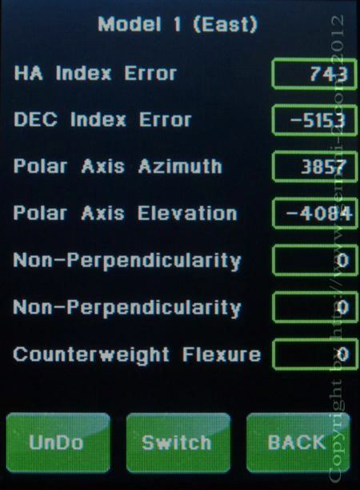

| Interactive Hand-Controller Menus - click on green button to Navigate |

|
Notice that you only have
the Polar Axis errors calculated also. You use the BACK button to take you to the next Star selection screen. The Switch button will switch the Error screens between the East and West model Error screens. The UNDO button will remove the Last star added to the model. Please hit Back for this Demo This screen shows the mount alignment parameters that the current model has. To select between models to see the other model, just hit switch and select either model 1 (east) or model 0 (west). The math behind calculating these errors: 1st alignments set the index parameters ID, IH. 3-5 alignments calculate MA, ME additionally. 6th..9th alignment add CH and NP non-perpendicularity parameters to the model. From 10th alignment up counterweight flexure DAF is added |